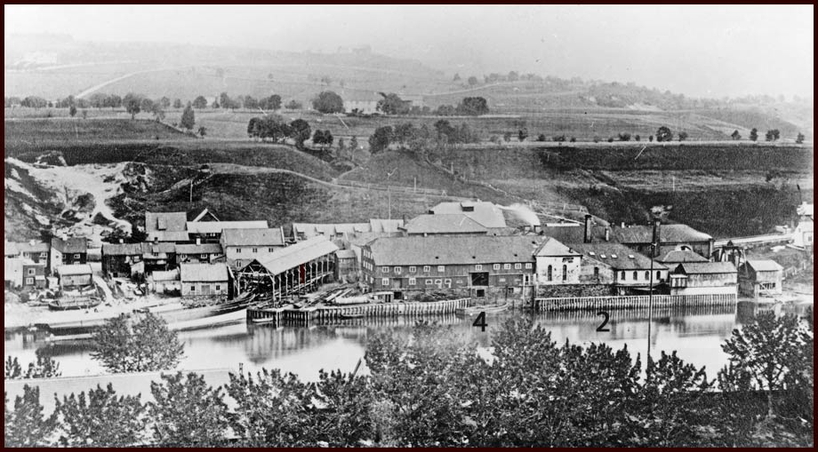
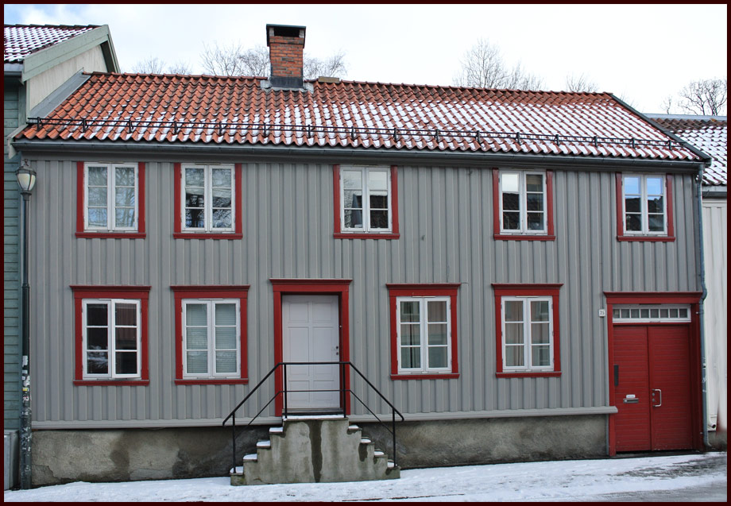

Husenes plassering, og adresser uten bebyggelse pr. 2014.
Øvre Bakklandet 1 -32
This site is about Bakklandet in Trondheim, Norway. All text in norwegian, but pictures are in english.

Øvre Bakklandet (Foto: EspeN-ikon ©)
Øvre Bakklandet 1
Øvre Bakklandet 1b - "Trenerygården" (Foto: EspeN-ikon ® )
Trenerygården - Øvre Bakklandet 1b (Fotograf: Stenstad / Holmås. Høsten 1978. Kilde: Trondheim Byarkiv)
Trenerygården tilhørte 1799 gården Bakkland og var da bygslet til Jacob Lars O. Bakken. Grunnen overtatt 1828 av forstander Christian L. Schive og senere Schives legat. 1837 bebodd av teglmester Hans F. Frognstad.
Da Fabriken ved Nidelven ble grunnlagt 1843 leide fabrikkens direktør John Trenery tomten og fikk oppført den nåværende gården. Trondhjems Mekaniske Værksted overtok gården 1874, i 1880 solgt til kjøpmann Carl Holthe.
I 1914 kjøpt av Trondhjems Redningsmisjon som drev arbeidshjem for kvinner her 1921 - 1953, da gården ble overtatt av Trondheim kommune. Gården forfalt, men ble senere restaurert og er i dag bolighus.
(Kilde: Trondheim Byleksikon)
Fotografiet tatt i forbindelse med Harald Holmås og Vidar Stenstads diplomoppgave vedrørende Øvre Bakklandet 1 B.
Se: Harald Holmås og Vidar Stenstad: Øvre Bakklandet 1 B (Diplomoppgave ved Institutt for husbyggingsteknikk, NTH Trondheim 1978)
Denne gården er svært godt dokumentert med foto fra 1978. Bildene ligger på Trondheims Byarkiv sin Flickr-side:
→ Trenerygården på Flickr
Øvre Bakklandet 2

Fabriken ved Nidelven var en tidligere industribedrift på den nåværende eiendommen Øvre Bakklandet 4. Etter hvert var også Øvre Bakklandet 2 en del av bedriften. (Foto: Charles Foss. Ukjent år. Kilde: Trondheim Byarkiv)
Øvre Bakklandet 3
Øvre Bakklandet 3 (Foto: EspeN-ikon ® )
Øvre Bakklandet 4
Fabriken ved Nidelven var en tidligere industribedrift på den nåværende eiendommen Øvre Bakklandet 4. Dette var Trondheims første egentlige industribedrift, grunnlagt i 1843. I forgrunnen ser man litt av Domkirkegården. (Foto: Charles Foss. Ukjent år. Kilde: Trondheim Byarkiv)
Fabriken ved Nidelven ble grunnlagt i 1843 av Hermann Christopher Garmann, Arild Huitfeld og Christian Ludvig Schreiner. John Treneryvar ble ansatt som Teknisk leder. Her ble det i 1849 - 1850 Norges første norskproduserte dampskip "Nidelven" bygd, og det første norskproduserte lokomotivet "Thrønderen" 1860 - 1861. I 1862 ble bedriften reorganisert, og fremsto etterhvert som et moderne skipsverft. Trenery var fremdeles teknisk leder. I 1870 kjøpte bedriften strandstrekningen nord for Fabrikken, og anla tre beddinger.
I 1872 ble Fabriken ved Nidelven slått sammen med Trolla Brug og dannet Trondhjems Mekaniske Værksted.
Etterhvert som etterspørselen på større skip økte, ble begrensingen stor med beddinger på Bakklandet. Bybroen var en begrensende faktor, og bedriften kjøpte tomt på Bakkestranden. Etter brann i kjeleverkstedt på Bakklandet, benyttet bedriften muligheten forsikringspengene ga, til å flytte bedriften til området som i dag er kjent som Solsiden.
Les mer om historien til Fabriken ved Nidelven her:
Sandvik, Pål Thonstad: Mekanisk Industri i en europeisk periferi. Fabrikken ved Nidelven 1843-76 (Oslo 1994)
Øvre Bakklandet 5
Øvre Bakklandet 5 (Foto: EspeN-ikon ® )
Øvre Bakklandet 6
Øvre Bakklandet 6 er inntegnet på kart fra 1885 ( Kilde: Kart Trondhjem - optaget ved stadsingeniörkontoret 1883)
Her sto det en gang et hus i tre etasjer som huset 32 mennesker. (Kilde: Digitalarkivet - folketelling 1910)
→ Digitalarkivet
Øvre Bakklandet 7

Øvre Bakklandet 7 (Foto: EspeN-ikon ® )
Øvre Bakklandet 8
Øvre Bakklandet 8, 1.april 2013 (Foto: EspeN-ikon ® )
↑ Til toppen
Øvre Bakklandet 9
Øvre Bakklandet 9 (Foto: EspeN-ikon ® )
Øvre Bakklandet 10
Øvre Bakklandet 10, 1.april 2013 (Foto: EspeN-ikon ® )
↑ Til toppen
Øvre Bakklandet 11

Øvre Bakklandet 11 (Foto: EspeN-ikon ® )
Øvre Bakklandet 12
(Foto: Charles Foss. Ukjent år. Kilde: Trondheim Byarkiv)
Øvre Bakklandet 13
( Fotograf: Schrøder - 1949 gjengitt med tillatelse fra Sverresborg Trøndelag Folkemuseum, Inventarnr.:FTTF.SCH.K.013181)
I krysset Øvre Bakklandet / Lillegårdsbakken lå Øvre Bakklandet 13. Adressen eksistere ikke lenger, og er nå en del av krysset der de to nevnte gater møtes.
Følgende opplysninger er vellvillig delt fra Trondheim Byarkiv:
I følge byggesaksregisterkortet ble Lillegårdsbakken 2 revet i 1972.
15.11.-72 - Bygn.råd - Jnr. 1807/72: "I brev datert 31/10-72 søker boligsjefen på vegne av Trondheim kommune om tillatelse til riving av Lillegårdsbakken 2 og 4. Husene er fraflyttet og i dårlig forfatning. Saken har vært oversendt Kontoret for bevaring av eldre bebyggelse, ved arkitekt Lars Fasting.
I brev datert 15/11-72 gjør arkitekt Fasting rede for sitt syn, og konkluderer med ikke å kunne anbefale at rivingstillatelse ikke blir gitt.
Vedtak:
Bygningsrådet finner i dette tilfelle å kunne gi rivingstillatelse. Nabovarsel må sendes på forhånd i henhold til bygningslovens § 94. Byingeniøren må varsles for plugging av vann- og kloakk-ledninger. Fylkeskonservatoren meddeles vedtaket."
I 1992 kom det så en søknad om byggetillatelse for nettstasjon. [S.A.]

Øvre Bakklandet 13 og 15 er i dag ubebygde tomter.
Øvre Bakklandet 13 og 15 er i dag ubebygde tomter. Bilvei samt gang- og sykkelvei tar nå mye av plassen. Karttegningen er ikke eksakt, kun en tenkt tidligere bebyggelse.
Øvre Bakklandet 14
Bilde av ØvreBakklandet 10-18 kan du ser her: → Øvre Bakklandet 10-18 i NTNU UBI billedbase
Se også Øvre Bakklandet 12 →12
Øvre Bakklandet 15
Krysset Øvre Bakklandet og Lillegårdsbakken (Foto: Ukjent fotograf og år. Kilde: Trondheim Byarkiv)
Øvre Bakklandet 15 er det hvite huset, hvor det står A/S J. BELBOE på veggen.
Hanne-Lise Barmann kommenterer: "A/S J. Belboe var en trivelig kolonialbutikk . Vet ikke når bildet er fra. Bodde sjøl på Øvre Bakklandet 1956-1968".
Varebilen i Bakgrunnen er en Renault 1000kg van, produsert nærmest uforandret mellom 1945 - 1958 (Ref: Jan Ludvig Bakken)
I følge folketellingen fra 1910 bodde det ikke mindre enn 31 personer i huset på det tidspunktet.
→ Øvre Bakklandet 15 i Digitalarkivet
Øvre Bakklandet 16
Øvre Bakklandet 16 - 1.april 2013 (Foto: EspeN-ikon ® )
Øvre Bakklandet 17
Øvre Bakklandet 17 - Januar 2013 (Foto: EspeN-ikon ® )
Øvre Bakklandet 17 - "Håkki" - Januar 2013 (Foto: EspeN-ikon ® )
Øvre Bakklandet 18
Øvre Bakklandet 18 - 1.april 2013 (Foto: EspeN-ikon ® )
Øvre Bakklandet 19
 Se også Øvre Bakklandet 30 Det er planlagt 12 leiligheter fordelt på 4 etasjer, på prosjektet Bakklandet Panorama. Prislisten viser en variasjon mellom 6,9 og 10,9 millioner NOK. (September 2015.)
Se også Øvre Bakklandet 27
Adressen Øvre Bakklandet 30 eksisterer ikke lenger. Den ble slått sammen med ØB 28 da det ble bygget nytt næringslokale på de to eiendommene. begge trehusene ble revet i 1936. Det finnes bilde av nr. 28 og 30 i det de skal rives. Bildene er desverre ikke tilgjengelig for fri bruk, men kan sees her: DIGITALT MUSEUM - Øvre Bakklande 28-34
Øvre Bakklandet 19 - 1.april 2013 (Foto: EspeN-ikon
Øvre Bakklandet 20
Øvre Bakklandet 20 - 1.april 2013 (Foto: EspeN-ikon ® )
Øvre Bakklandet 21
Øvre Bakklandet 21 - 1.april 2013 (Foto: EspeN-ikon
Øvre Bakklandet 22
Øvre Bakklandet 22 - 1.april 2013 (Foto: EspeN-ikon ® )
Øvre Bakklandet 23

Øvre Bakklandet 23 - 1.april 2013 (Foto: EspeN-ikon
Øvre Bakklandet 24
Øvre Bakklandet 24 - 24.mars 2013 (Foto: EspeN-ikon ® )
Øvre Bakklandet 25
Øvre Bakklandet 25 - 1.april 2013 (Foto: EspeN-ikon
Øvre Bakklandet 26
Øvre Bakklandet 26 - 24.mars 2013 (Foto: EspeN-ikon ® )
Bakgård i Øvre Bakklandet 26 - 24.mars 2013 (Foto: EspeN-ikon ® )
Øvre Bakklandet 27
Øvre Bakklandet 29 til venstre, 27 til høyre - 1.april 2013 (Foto: EspeN-ikon )
Øvre Bakklandet 28
Fra salgsbrosjyre for Bakklandet Panorama (Foto: Nylander )
Øvre Bakklandet 29
Øvre Bakklandet 29 - 20.september 2015 (Foto: EspeN-ikon )
Øvre Bakklandet 30
NTNU UBISYS: Riving av Øvre bakklandet 28-30
Øvre Bakklandet 31
Øvre Bakklandet 31 - 1.april 2013 (Foto: EspeN-ikon
Øvre Bakklandet 32